About Me 自己紹介
UX Designer in progress—sharpening skills and soaking up experience through internships!
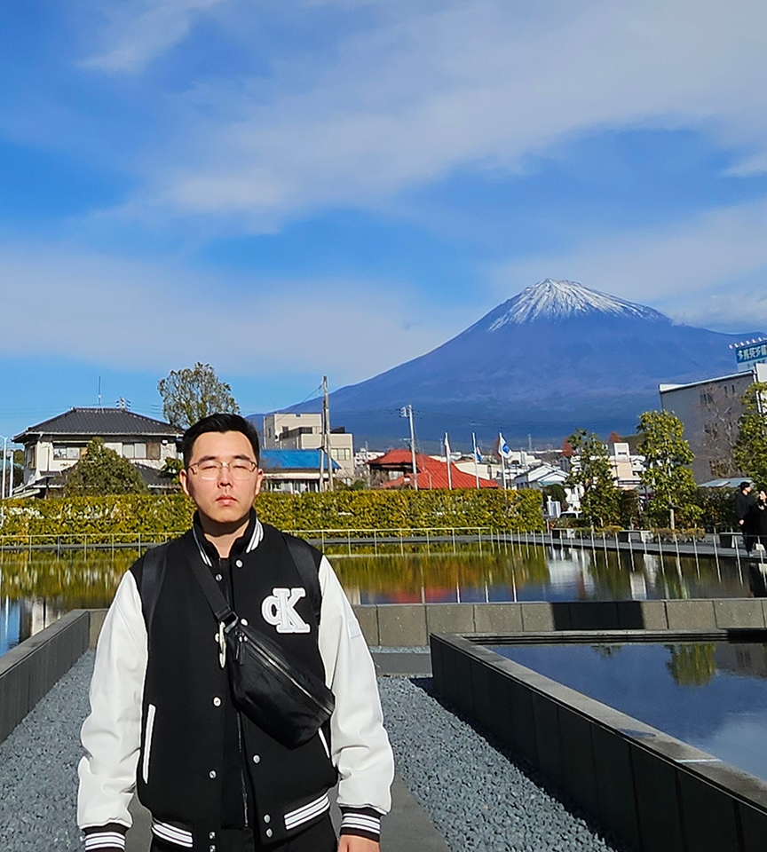
I’m currently in my final year at NUS, majoring in Computer Science and minoring in Japanese Studies. While my background is technical, I’ve grown to appreciate how important good User Experience design is in making technology truly usable and meaningful.
I hope to bring my technical background into my design work—making sure my ideas are feasible, easy to understand for non-design stakeholders, and mindful of developer needs. Having been on the development side myself, I know the challenges developers face, but I still aim to create great user experiences without compromising on what users really need.
I’m currently seeking UX design internships, taking courses related to design in my university, and doing my own side projects to help me build a future career in the field.
Skills スキル
- UI/UX Design
- Iterative Design
- Prototyping & Wireframing
- User Flows
- Usability Testing
- User Interviews
- Affinity Mapping
- Figma / Adobe Illustrator
- HTML, CSS, JavaScript
- Game Development
- Game Design
- Unity3D, C#
- Blender
- CAD Drawing
- Digital Art
- Video Editing
- Building PCs
- Assembling Keyboards
Work Experience 職歴
UI/UX Design Intern • Jan 2025 to Jul 2025
GovTech Singapore
Overseas Sales Representative Intern • Mar 2021 to Aug 2022
江苏微点国际贸易有限公司
Software Developer • Feb 2020 to Jul 2020
Roboto Coding Academy
Web Development Intern • Sep 2019 to Feb 2020
Roboto Coding Academy
Interests 興味
🍥 Japanese Culture
I’ve been learning Japanese and am currently preparing for the JLPT N1 exam. I enjoy traveling to Japan to try delicious food and practice speaking the language. Usually, I practice my listening skills by watching Japanese livestreams.
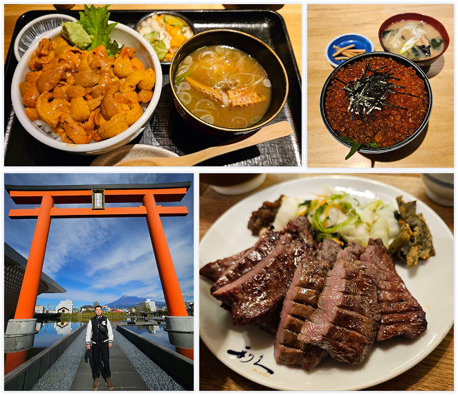
🎨 Digital Art
I enjoy drawing as a hobby using Clip Studio Paint. I first got into it during polytechnic while creating art assets for my games.
⌨️ Custom DIY Tech
I build PCs and mechanical keyboards. I also design custom keyboard cases in Fusion360.
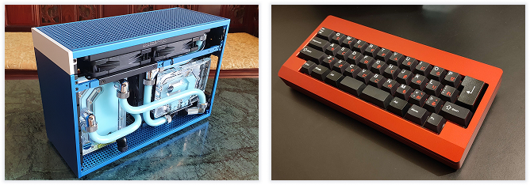
🎮️ Gaming & Game Development
I play a lot of League of Legends and watch gaming livestreams. As I specialized in game development during my time in polytechnic, I also make games in Unity3D and create 3D models in Blender.
👟 Running
I usually run 5km three times a week, and sometimes push for 10km. I don’t have a specific goal right now—I’m just running to stay fit.
Others その他
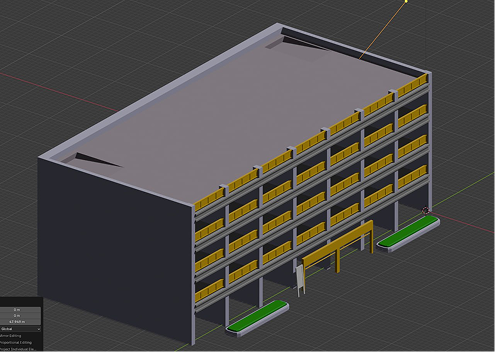
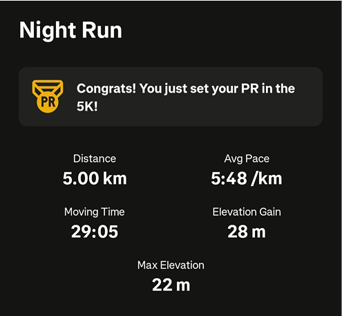
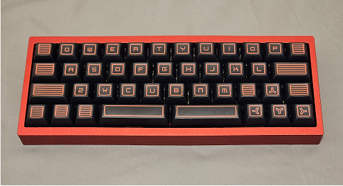
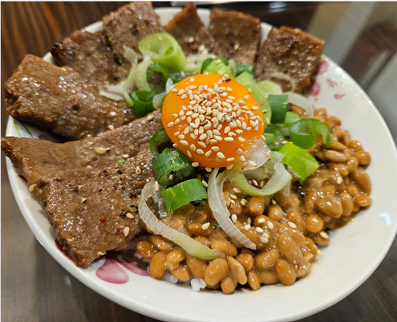
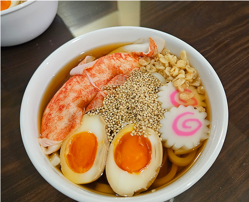
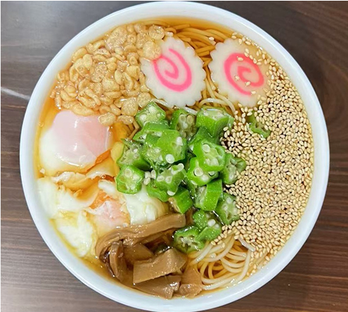
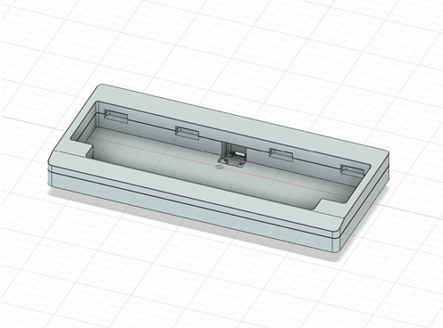
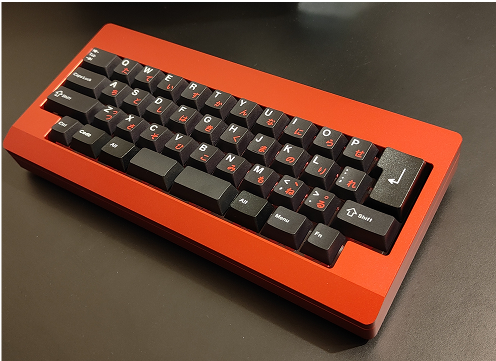
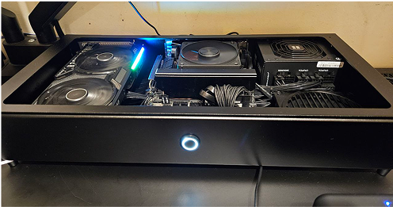
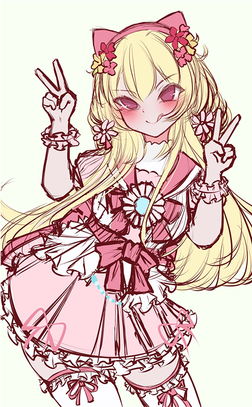